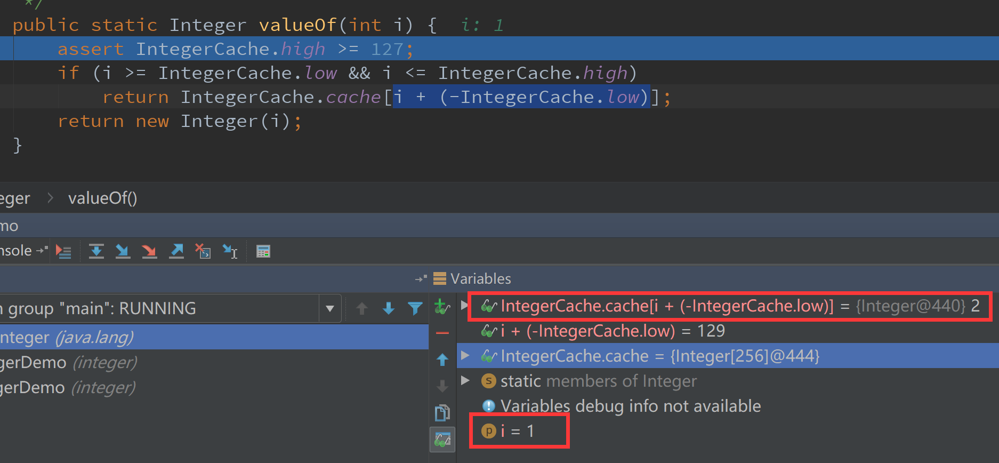

Integer是很常用的包装类，探索它的实现原理，要从一个测试BUG说起。
问题现象
前几天一个账务统计的功能重构，提交测试不久马上收到了测试的BUG邮件，统计结果错误，从测试用例看来，覆盖的用例中所有的测试结果都是错的，赶紧翻开代码排查。
简单描述要实现的功能：A和B的序号互换，A和B的序号都是Integer类型，简化后的错误代码如下：
1 | public static void main(String[] args) throws NoSuchFieldException, IllegalAccessException { |
错的很明显有木有？
值传递和引用传递的问题，对于引用类型，赋值运算会改变引用中保存的地址，原来的地址被覆盖了，但是！！！原来的对象并不会被改变。
运行结果可想而知
1 | 交换前: seqA=1,seqB=2 |
打回重写，15分钟后，开发同学重新提交了代码
1 | private static void swap(Integer seqA, Integer seqB) throws NoSuchFieldException, IllegalAccessException { |
嗯，利用反射改变A和B的值，应该可以了，运行试试：
1 | 交换前: seqA=1,seqB=2 |
？？？A的值改变了，为何B的值还是旧的？
探索原因
为了解开这个疑惑，先来看一下这段代码：
1 | public static void main(String[] args) throws NoSuchFieldException, IllegalAccessException { |
运行结果会是什么？
1 | a==b true |
对象之间的比较，使用==比较的是对象地址，equals才是比较对象的值，为什么这个结果是true？
别急，反编译看看
1 | D:\work\workspace\demo\target\classes\integer>javap -c IntegerDemo.class |
main方法的第1行和第6行分别对应Integer a = 1;Integer b = 1;调用的是Integer.valueOf方法。看看这个方法做了什么
1 | public static Integer valueOf(int i) { |
这里用到了Cache，看看IntegerCache是如何定义的，用来做什么的
1 | private static class IntegerCache { |
Integer初始化时，对-128~127区间的数字做了缓存处理，这些数字对应的包装类作为cache数组的值。在Integer.valueOf方法中，先判断传入的值是否在此区间内，如果是，通过cache的下标取出对应的value，否则new Integer()。
验证一下
1 | public static void main(String[] args) throws NoSuchFieldException, IllegalAccessException { |
结果
1 | a1==a2 true |
现在我们回到A和B互换的问题
利用反射赋值，看看field.set方法
1 | public void set(Object obj, Object value) |
第二个参数接收的是Object，在互换的代码中，seqB.intValue()进行了一次自动装箱，相当于
1 | field.set(seqA, Integer.valueOf(seqB.intValue())); |
此时seqA = 2，cache缓存中的值会如何变化？通过下面的代码来验证
1 | private static void swap(Integer seqA, Integer seqB) throws NoSuchFieldException, IllegalAccessException { |
运行结果
1 | 交换前: seqA=1,seqB=2 |
tmp = 1，但是 Integer.valueOf(tmp) = 2 ？？？Debug

i=1，cache对应的下标为129，因为先前做了反射赋值，缓存Integer的值被改成了2，最终返回2。
问题找到了，那么如果要用反射的方式，如何修改代码呢？因为是在反射赋值之后，调用valueOf方法读取cache获取了错误结果，那么在反射赋值前创建Integer临时对象，再赋值给seqB就可以了。修改后的代码：
1 | private static void swap(Integer seqA, Integer seqB) throws NoSuchFieldException, IllegalAccessException { |
运行结果：
1 | 交换前: seqA=1,seqB=2 |
总结
- Integer的实现中设计了缓存，缓存的区间下限是-128，默认上限为127（下限不可更改，上限可以通过JDK的参数
-XX:AutoBoxCacheMax修改），缓存了对应数值的Integer对象 - 在上下限区间内，从缓存中获取值，在这个区间内，同一个数返回的对象相同。
- 反射赋值会改变对应缓存对象的值